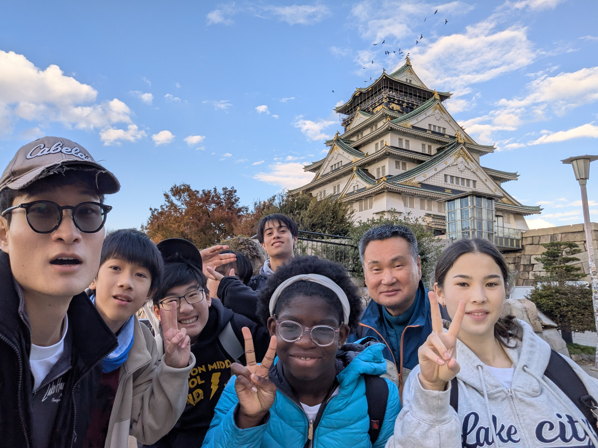

Our Journey
44 Years of Korean Education

1982
The Founding
Established by True Parents

2016
Moved to the Cheonwon Complex
Moved to the present location, in view of the True Parents' Palace.

2026
Celebrating 44 Years
After temporarily going online during the COVID-19 Pandemic, the GOP program has returned and is now going on 44 years.